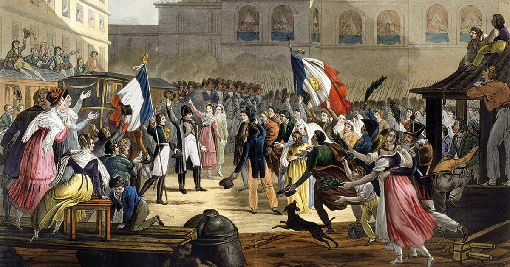
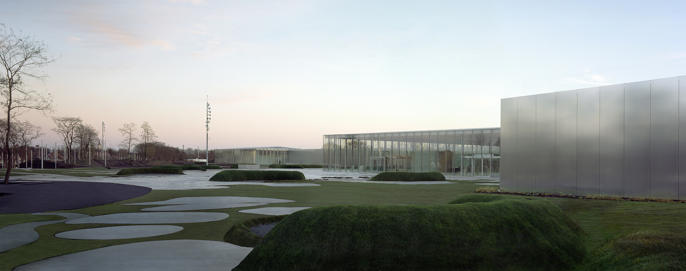

Inaugurado a finales del siglo XVIII, el Museo del Louvre es el museo más importante de Francia y uno de los más visitados del mundo. Actualmente recibe más de ocho millones de visitantes cada año.

Formado a partir de las colecciones de la monarquía francesa y las expoliaciones realizadas durante el imperio Napoleónico,
el Museo del Louvre abrió sus puertas en 1793 mostrando un nuevo modelo de museo, que pasaba de las manos de las clases
dirigentes al disfrute del público general. Tras el traslado de la residencia real al Palacio de Versalles, el impresionante edificio de 160.000 metros cuadrados comenzaría su proceso de transformación en uno de los museos más importantes del mundo.
En 1989 se construyó una pirámide de cristal rompiendo la monotonía de los grandes bloques grises del museo, que en la actualidad sirve como puerta de acceso.
En marzo de 2004 se anunció la apertura de una nueva sala dedicada al arte islámico: para su diseño se convocó un concurso internacional en 2005 y se inauguró en 2008, con una inversión de 50 millones de euros. Sin embargo, el despliegue de las colecciones islámicas prosiguió con una ampliación mayor, subterránea, inaugurada en 2012 y que se corona por una cubierta en forma de alfombra voladora. Estas salas contaron con el patrocinio de países y magnates islámicos, deseosos de favorecer la difusión de su cultura en Europa.
A pesar de las múltiples ampliaciones y reformas, el Louvre mantiene almacenada parte de sus colecciones, lo que explica la apertura de una segunda sede en Lens, cerca de la frontera con Bélgica. Esta ciudad se hallaba económicamente deprimida por una crisis industrial, y la apertura del Musée Louvre-Lens en diciembre de 2012, con unas 600 obras, le ha asegurado un estimable flujo turístico, al menos inicialmente: 900.000 visitas en su primer año de funcionamiento. Por su parte, la Unión Europea, fue el segundo mayor financiador del proyecto, con una participación de 37 millones de euros (24,7% del monto total).
Adicionalmente, en Liévin, una población cercana a Lens, se está construyendo un gran almacén para el Louvre parisino; una vez inaugurado en 2019 dará una ubicación más segura a miles de piezas que en París corren cierto riesgo por los ocasionales desbordamientos del río Sena. Este peligro quedó patente en junio de 2016, cuando una crecida del Sena obligó a mover miles de piezas desde los sótanos a plantas superiores.
Así mismo, el Louvre ha accedido a dar su nombre a una segunda delegación, ésta en el extranjero: el museo Louvre Abu Dabi en Emiratos Árabes Unidos. A cambio de una suma cercana a US$1300 millones, la institución ha suscrito un acuerdo de treinta años de duración, según el cual aportará su nombre, obras de arte y asesoramiento a un museo de nueva construcción diseñado por Jean Nouvel. Este acuerdo permitirá exhibir obras que permanecían almacenadas, además de captar fondos para el mantenimiento del edificio del Louvre y para la recuperación de una parte de su Pabellón de Flora